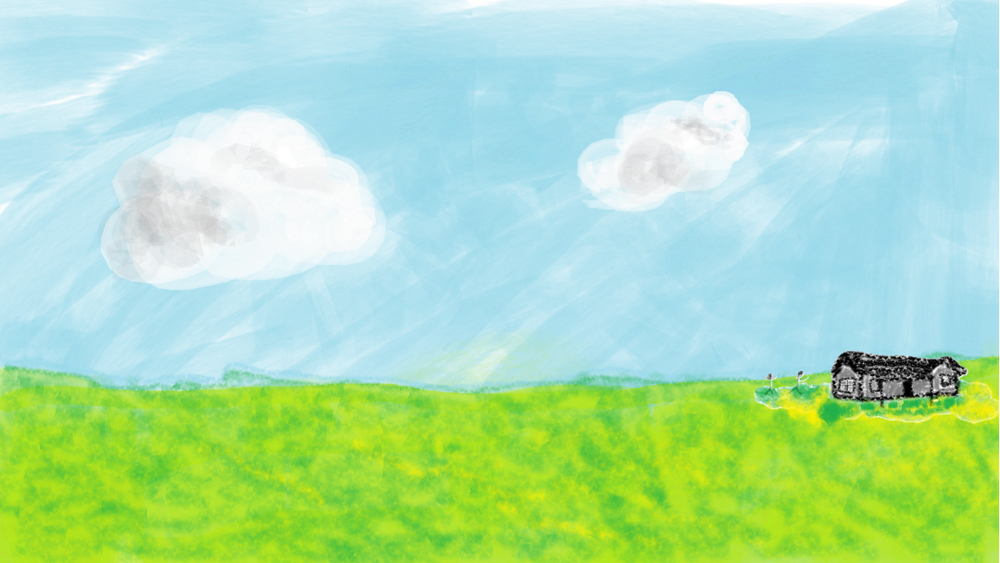

Tal vez estas palabras no tengan sentido, estén mal escritas, carezcan de sentido, tal vez cambien y muten sin rumbo fijo, no serán palabras honestas porque son algo intentando expresando algo que en per se no son. Son solo palabras escritas con un propósito vago. Expresar mi amor, mi amor que no es amor, el vacío de mis sentimientos, que parecen quemarme, que parecen abrazarme, helarme. Sin duda algo es, y es único como tú, supongo que amarte tiene algo de especial. Tal vez no haya un te amo, tal vez sea un amándote. Y amarte es algo tan grande para mí, como un universo. Quizá sea algo que no pueda explicar, y quizá no deba buscar explicarlo. Debo confesar que me interesé por ti por cosas muy egoístas, bueno supongo que tener la posibilidad de conocer a alguien que pueda hablarte sobre las cosas que te interesan es cuanto menos algo deseable, normal hasta cierto punto. Platonto, fue la señal quizá, tal vez Louis Wain, pero has estado en mi mente por un gran tiempo por las razones equivocadas. Alguien, no tú. Una posición que llegué a pensar que podrías ocupar, alguien interesante. Y me demostraste no sé muy bien cuantas veces que eras más que eso. Claro cada persona es más que un alguien, más que un constructo de tu mente. Y tú pues no sé, cada vez que te veía, me resultabas muy extraña, rara, bueno no sé cuántas veces te dije que eres rara, y sigues teniendo para mí esa rareza tan rara, bueno raramente raro. Y quizá por eso me causabas cierta incomodidad. Y bueno si algo te incomoda quizá algo lógico sea evitarlo. Y así fue, y así hubiera sido. Pero bueno, tú impediste eso. Hiciste tantas cosas, y supongo que ya lo dije antes, no me hace sentido. Pero eso ya dejó de importar. El universo es inmenso, cada estrella, imagínate si sus macroestructuras sean células y formemos parte de un ser vivo de magnitudes que no podemos imaginar, como matrioskas, pero con pequeños deslices en las proporciones. Un universo es muy grande, y no podría comparar amarte con algo de tal magnitud, porque bueno no puedo procesar un universo, pero puedo procesar el firmamento. Inmenso, precioso, e impredecible. Y no sé, pero cayendo de nuevo en cosas egoístas, eres mi cielo, y quiero verte, clara, en tormenta, vacía, en un atardecer, en un amanecer, en todo lo que quieras ser, amándote.
Toca para comenzar